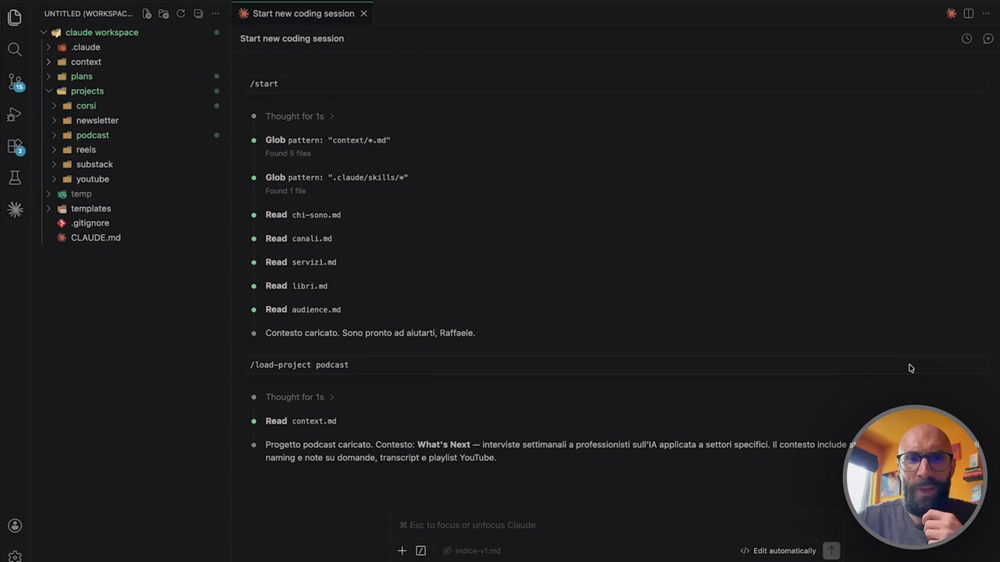
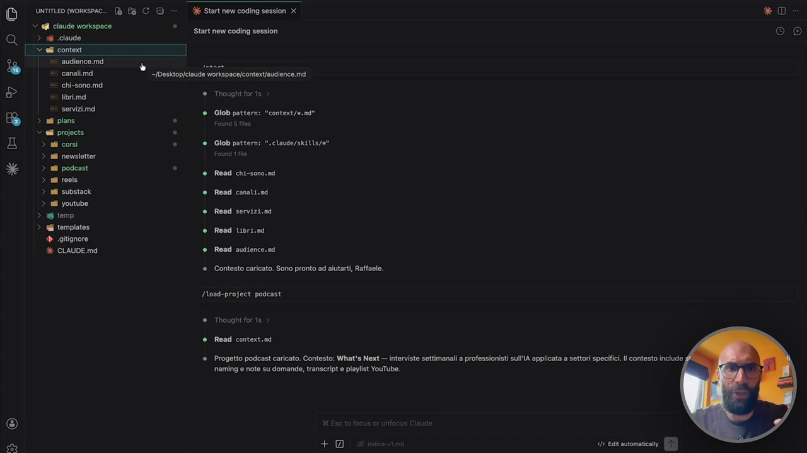
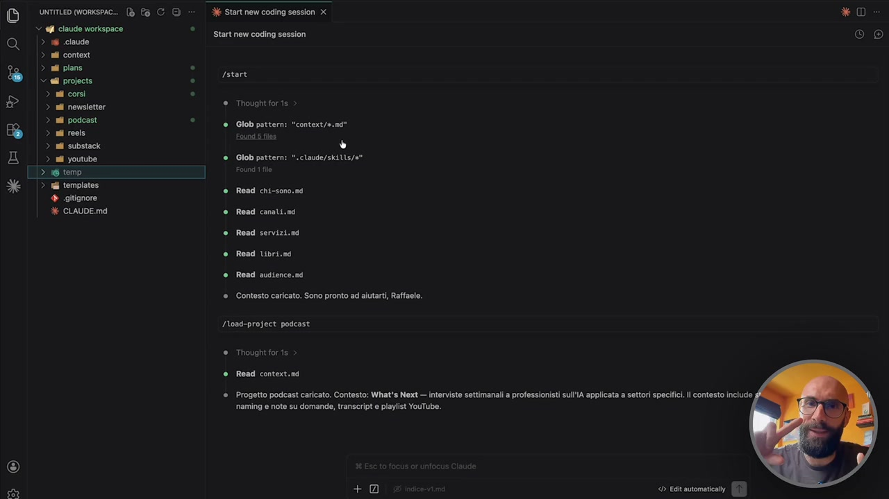
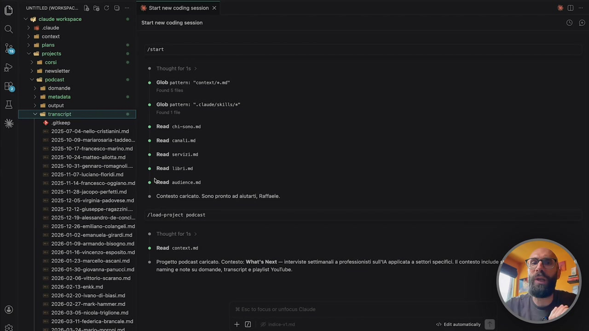
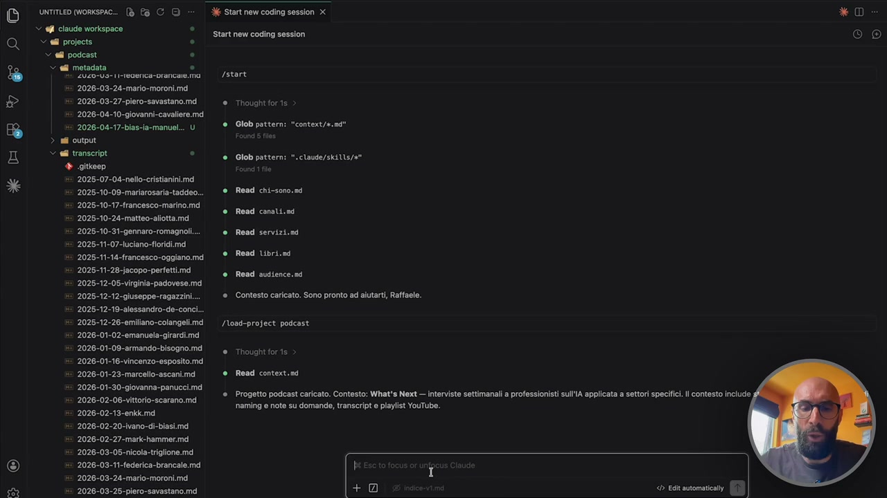
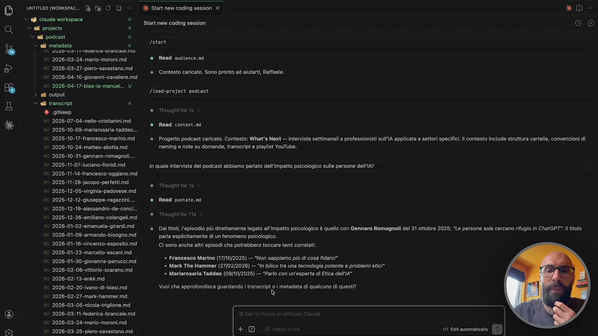
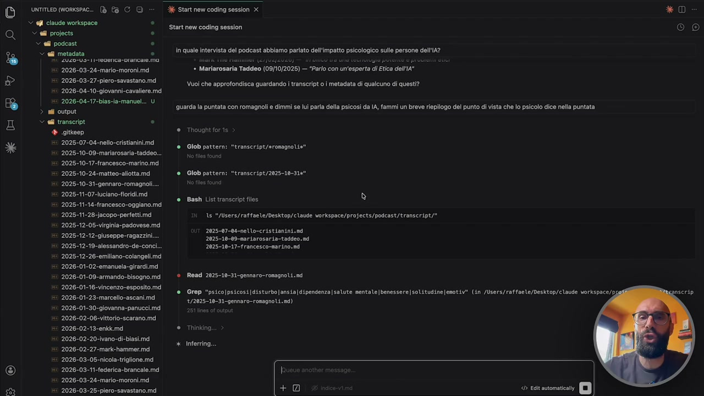
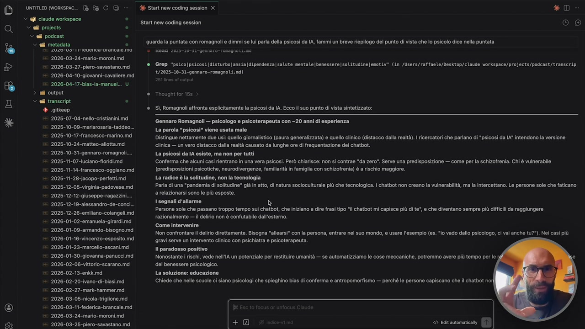

OCR: * ce Vv È 20 O) unriTLED (Workspac.. (è Pa C Q Y q@i claude workspace > i claude > nil context > ati plans V ell projects. > ai corsì > ai newsletter > sii podcast > ail reels > ail substack > ati youtube > 36 temp > uil templates + ogitignore % CLAUDE.mdi Start new coding session X Start new coding session Istart € Thought for is ® Glob pattern: "context/e.md' ®. Glob pattern: ".claude/skilts/e" è Read chi-sono.nd ® Read cansli.nd * Road servizi.n è Read Ubri.sa ® Road audience.sd ® Contesto caricato. Sono pronto ad alutarti, Raffaele. /Noad-profect podcast ® Thought for is * Read context.nd ®. Progetto podcast caricato. Contesto: What's Next — interviste settimanali a professionisti sullIA applicata a settori specifici. ll contesto include ‘naming e note su domande, transcript e playlist YouTube. * © © ®
Piccolo modulino extra perché ho detto facciamo vedere a sto punto un attimo pure il mio workspace. Infatti vedete pure un attimo l'inquadratura diversa l'ho registrato dopo. Lo voglio far vedere solo per far vedere che l'esempio che vi ho fatto vedere prima non sono esempi inventati diciamo così generici light e uno dice vabbè però sicuramente Raffaele nel suo vero uso di cloud code ci avrà una cosa complicatissima con 200 cartelle sotto cartelli mostri no questo è il mio VSCode, questo è il mio workspace e io ho la cartellina cloud questa qua è una cartella speciale diciamo dove ci sono le skills ignoratela perché la vedremo dopo quando parleremo delle skills ma quello che c'è è cartella con il contesto. Ve l'apro, vi faccio vedere dentro il contesto, ne parliamo tra un attimo quando parleremo del contesto che è un altro dei punti fondamentali per usare bene cloud code. Praticamente è tutto quello che cloud code sa su di me, il mio lavoro, quello che faccio. Vedete c'è uno per l'audience

OCR: D urmemoneme. ® fa CO > 6 temp > ul templates + oaitignore € CLAUDE.md O) XK Start new coding session X Start new coding session “/Pesktop]claude workspace/contet/audience.md € Thought for is ® Glob pattern: "context/e.nd' ®. Glob pattern: ".claude/skilts/e" und tl è Read chi-sono.sd @ Read canali.nd ® Road servizi.n è Read Ubri.sd ® Road sudience.sd ® Contesto caricato. Sono pronto ad aiutarti Raffaele. /Noad-project podcast ® Thought foris ® Read context.nd ®. Progetto podcast caricato. Contesto: What's Next — interviste settimanali a professionisti sullIA applicata a settori specifici. ll contesto include ‘naming e note su domande, transcript e playlist YouTube. < Eclt automatica
uno per i canali ma ci andiamo dopo in dettaglio. C'è una cartella per i piani per la pianificazione perché vi ho detto che con cloud si lavora con la pianificazione. Prima vi ho fatto vedere un modo semplice di pianificare in realtà dopo vi faccio vedere un modo serio di pianificare, quello che preferisco io, una cartella con i progetti, poi una cartella temporanea con le cose che stanno, non so se c'è qualcosa qua dentro in questo momento, sì, vedete devo pure cancellarla, e una cartella con i template quindi con i file che vi utilizzo spesso e la cartella con i progetti, cioè guardate dentro cosa c'è ci sta 1 2 3 4 5 6 questo è tutto il mio cloud code, cioè ci sono sei cartelle dentro la cartella progetti, i corsi, la newsletter, il podcast, i reel, cioè questo si chiama reel ma in realtà sarebbe, i reel per me intendo reel, short, tiktok quindi video brevi, substack che è la mia newsletter in inglese e youtube tra l'altro avete visto che qua uso una sorta di ibrido tra i due modelli che

OCR: O) untiTLED (Workspac. (è Pa CD > q@i claude workspace ° > i claude > ni context > ati plans . V ell projects. . > af corsi . > ai newsletter > ail podcast . > nil reels > ail substack "> ri templates. + ogitignore è CLAUDE.md Start new coding session x Start new coding session Istart € Thought for is ® Giob pattern: "context/e.nd" » ®. Glob pattern: ".claude/skilts/e" è Read chi-sono.md è Road canali.nd * Read servizi.n è Read Ubri.sa ® Road sudience.nd ® Contesto caricato. Sono pronto ad alutarti, Raffaele. /Noad-project podcast ® Thought for.is ® Read context.nd ® Progetto podcast caricato. Contesto: What's Next — interviste settimanali a professionisti sullIA applicata a settori specifici. ll contesto include ‘naming e note su domande, transcript e playlist YouTube. < Ecit automatica * D (Co)
vi ho fatto vedere prima perché chiamo la cartella progetti però poi dentro le chiamo anche youtube, podcast, quindi diciamo come vi ho fatto vedere prima il workspace lo potete gestire con la flessibilità che volete voi, quindi io qua ragiono per progetti e non per canali però youtube è un canale, il podcast è un canale, semplicemente io lo tratto come se fosse un progetto, quello per me è il progetto podcast, il progetto substack e che ne so, ve lo apro podcast per farvi vedere che forse è uno di quelli dei più corposi, questo è contesto, file di contesto, ignorateli per il momento, ci sono le domande per esempio, vedete queste sono tutte le domande che ho fatto a tutti gli ospiti, è importante che lui abbia le domande perché così siccome cloud code lavora sul testo più cose c'ha, più è in grado poi di rispondere bene alle nostre richieste che ne so, i transcript, qua ci sono i transcript completi, quindi la trascrizione completa di tutte le interviste, qua ci sono i metadati, cioè mi

OCR: DD urmeomoneme. D î CO © W@l claude morkspace . > a claude > all context è 71m . > ell projects . > all corsì . DO > a nevsiettr Val podcast . Hd > sa domande > ai metadata è TI ANO iaicuno transit X + citkeop 2025-07-04-nello-cristianini.md 2025-10-09-marlarosaria-taddeo... 2025-10-17-francesco-marino.md ‘2025-10-24-matteo-allotta.md 2025-10-31-gennaro-romagnoli... 2025-11-07-Hluciano florida 2025-11-14-francesco-oggiano.md 2025-11-28-jacopo-perfetti.md 2025-12-05-virginia-padovese.md 2025-12-12-giuseppe-ragazzini 2025-12-19-alessandro-de-conci; ‘2025-12-26-emillano-colangeli.md 2026-01-02-emanuela-girardi. md 2026-01-09-armando-bisogno.md 2026-01-16-vincenzo-esposito. md 2026-01-23-marcello-ascani.md 2026-01-30-giovanna-panucci.md 2026-02-06-vittorio-scarano.md 2026-02-13-enkk md 2026-02-20-ivano-di-biasi.md ‘2026-02-27-mark-hammer.md 2026-03-05-nicola-triglione.md 2026-03-11-federica-brancale.md TAI ZIA ZA: i era O) % Start new coding session x Start new coding session Istart € Thought for'is è Glob pattern: ‘context/ a. nd ®. Glob pattern: ".claude/skilts/e" ® Read chi-sono.sd ® Read canali.nd ® Read servizi.nd ® Read Ubri.nd è read audience. sd ® Contesto caricato. Sono pronto ad alutarti, Raffaele. /Noad-project podcast € Thought foris ® Read context.nd ®. Progetto podcast caricato. Contesto: What's Next — interviste settimanali a professionisti sullA applicata a settori specifici. ll contesto include naming e note su domande, transcript e playlist YouTube. < Ealt automatica * © e ®
faccio aiutare a creare i metadati, i metadati sarebbe i titoli, le descrizioni, le copertine, i tag, quella roba la non la faccio più a mano, ovviamente l'AI è perfetta nel fare quella roba, lo fa molto più velocemente di me, lo fa molto più ottimizzato di me, mi propone delle alternative, ma lo può fare perché c'ha i transcript, quindi se io gli dico, che ne so, la puntata con Savastano, con Piero Savastano, bellissima, se non l'avete vista vedetevela, parliamo proprio di cloud code, lui va a vedere l'intervista, si legge un'ora di transcript, sa di cosa abbiamo parlato e mi propone dei titoli adatti, delle descrizioni adatte, delle copertine adatte e così via, ovviamente lo so, voi magari non fate youtube, però il senso è lo stesso, cioè se voi avete, fate consulenza, se voi fate presentazioni, se voi scrivete molti report, fate molte call one to one, meeting, è la stessa cosa, vi tenete le trascrizioni dei meeting e perché è bello, perché potete interrogarlo, vi faccio vedere, cioè se io qua gli dico, in quale

OCR: e) *XUER TV È O) unriTLED Workspac.. (è Pa C © Y @@i claude workspace . Vel projects. . “ell podcast . V ell metadata . 2026-03-24-mario-moroni.md 2026-03-27-piero-savastano.md! 2026-04-10-giovanni-cavaliere.md. 2026-04-17-bias-ia-manuel... U > al output Sul transcript. . + gitkeep 2025-07-04-nello-cristianini.md 2025-10-09-mariarosaria-taddeo. 2026-10-17-francesco-marino.md 2026-10-24-matteo-aliotta.md 2025-10-31-gennaro-romagnoli. ‘2025-11-07-luciano-fioridi.md 2025-11-14-francesco-oggiano.md 2025-11-28-jacopo-perfetti.md 2025-12-05-virginia-padovese.md 2025-12-12-giuseppe-ragazzini... 2025-12-19-alessandro-de-conci... 2025-12-26-emillano-colangeli.md 2026-01-02-emanuela-girardi.md 2026-01-09-armando-bisogno.md ‘2026-01-16-vincenzo-esposito.md 2026-01-23-marcello-ascani.md 2026-01-30-giovanna-panucci.md 2026-02-06-vittorio-scarano.md 2026-02-13-enkk.md 2026-02-20-ivano-di-biasi.md ‘2026-02-27 -mark-hammer.md 2026-03-05-nicola-triglione.md 2026-03-11-federica-brancale.md ‘2026-03-24-mario-moroni.md ‘2026-03-25-piero-savastano.md Start new coding session x Start new coding session Istort € Thought for'1s ® Glob pattern: ‘context/a. nd ®. Glob pattern: ".claude/skiUs/a" è Read chi-sono.sd Road conali.nd ® Road servizi.n è Read Ubri.sd ® Road sudience.sd ® Contesto caricato. Sono pronto ad aiutarti, Raffaele. /Noad-project podcast oght foris ® Read context.nd ®. Progetto podcast caricato. Contesto: What's Next — interviste settimanali a professionisti sullA applicata a settori specifici. ll contesto include ‘naming e note su domande, transcript e playlist YouTube.
intervista del podcast abbiamo parlato dell'impatto psicologico sulle persone dell'IA, adesso questo è il mio cloud code all'opera, non è diciamo generico, non è quello che sto usando per il corso, perciò vedete pure l'inquadratura diversa e così via, il fatto dicevo di avere questo grosso, questa grossa mole di dati, che è quella che viene chiamata la knowledge base, la knowledge base la possiamo chiamare come la nostra base di conoscenza, ecco mettiamola così, dice allora, dai titoli l'episodio più direttamente legato all'impatto psicologico è quello con Gennaro Romagnoli, del 31 ottobre 2025, le persone cercano rifugio in CGPT, esattamente quello che è successo, lo dice, guarda è stato anche accennato con Francesco Marino il giornalista, con Maria Sonata Taddei, con Mark Dahmer e così via, vuoi che approfondisca, guarda di

OCR: (e) *XcE TV È O) unritLeo workspc (è Pa CD ei claude workopace . a projects o “ @8 podcast . x i metadata S 2026-03-24-mario-moroni.md 2026-03-27-piero-savastano.md! 2026-04-10-giovanni-cavaliere.md 2026-04-17-bias-ia-manuel... U > nti output © ell transcript. . + gitkeep 2025-07-04-nello-cristianini.md ‘2025-10-09-mariarosaria-taddeo. 2026-10-17-francesco-marino.md 2026-10-24-matteo-aliotta.md 2025-10-31-gennaro-romagnoli. ‘2025-11-07-luciano-fioridi.md 2025-11-14-francesco-oggiano.md 2025-11-28-jacopo-perfetti.md 2025-12-05-virginia-padovese.md 2025-12-12-giuseppe-ragazzini... 2025-12-19-alessandro-de-conci... 2025-12-26-emilano-colangeli.md 2026-01-02-emanuela-girardi.md 2026-01-09-armando-bisogno.md ‘2026-01-16-vincenzo-esposito.md 2026-01-23-marcello-ascani.md 2026-01-30-giovanna-panucci.md 2026-02-06-vittorio-scarano.md 2026-02-13-enkk.md 2026-02-20-ivano-di-biasi.md! 2026-02-27-mark-hammer.md 2026-03-05-nicola-triglione.md 2026-03-11-federica-brancale.md ‘2026-03-24-mario-moroni.md ‘2026-03-25-piero-savastano.md XK Start new coding session X * © Start new coding session (Oo) Istart @ Read audience.sd ® Contesto caricato. Sono pronto ad aiutarti, Raffaele. Nwad-project podcast ®. Thought for 1s ® Read context.nd ®. Progetto podcast caricato. Contesto: What's Next — interviste settimanali a professionisti sull'IA applicata a settori specifici. ll contesto include struttura cartelle, convenzioni di ‘naming e note su domande, transcript e playlist YouTube. in quale intervista del podcast abbiamo parlato dell'impatto psicologico sulle persone dell'1A? ® Thought for.is e Read puntate.nd ® Thought for ts ® Daltitoli, l'episodio più direttamente legato all'impatto psicologico è quello con Gennaro Romagnoli del 31 ottobre 2025: “Le persone sole cercano rifugio in ChatGPT*. titolo parla esplicitamente di un fenomeno psicologico. Ci sono anche altri episodi che potrebbero toccare temi correlati: » Francesco Marino (17/10/2025) — “Non sappiamo più di cosa fidarci* * Mark The Hammer (27/02/2026) — "In bilico tra una tecnologia potente e problemi etici" * Mariarosaria Taddeo (09/10/2025) — “Parlo con un'esperta di Etica dell'A" VCRREO TETTE TN geo < Edit avtomaticaliy
transcripto i metadati di questi dati? Io gli dico sì, guarda la puntata con Romagnoli e dimmi se lui parla della psicosi da IA, fammi un breve riepilogo del punto di vista che lo psicologo dice nella puntata, cioè questa è un'ora di intervista, sarebbe stato impossibile su youtube andare avanti avanti avanti avanti fino ad andare a prendere il punto esatto nel quale ne parlava, però magari a me serve quel pezzo là, perché voglio fare un articolo sul mio blog, perché voglio fare un'immagine da pubblicare sui social, perché che ne so, perché la devo citare in un contenuto che sto facendo, in un libro che sto scrivendo, qualsiasi sia la casistica, ma siccome lui può accedere a tutto questo adesso mi va a prendere specificamente quella roba là, quindi la puntata con Gennaro Romagnoli dove parliamo dell'impatto psicologico, mi prende quel

OCR: DÒ ve morse bbc o Start new coding session x * D TITO ® stirt n cocing session Co) v @É podcast . > el metadata Lînquale intervista del podcast abbiamo parlato dell'impatto psicologico sulle persone dell'\#? CETRA * Mariarosaria Taddeo (09/10/2025) — “Parlo con un'esperta di Etica dell'A" 2026-03-27-piero-savastano.md 2026-04-10-giovanni-cavaliere.md 2026-04-17-bias-ia-manuel... U > nti output Sell transcript. . "@ attneo ® Thought fors 2025-07-04-nello-cristianini.md ‘2025-10-09-mariarosaria-taddeo. 2026-10-17-francesco-marino.md 2026-10-24-matteo-aliotta.md ® Globpattern: 2025-10-31-gennaro-romagnoli. 2025-11-07-luclanoorigL.md Sao ® Bash List transeript files è Vuoi che approfondisca guardando i transcript o i metadata di qualcuno di questi? guarda la puntata con romagnoli è dimmi se lui para della psicosi da IA, fammi un breve riepilogo del punto di vista che lo psicolo dice nella puntata *XUARTV È ® Glob pattern: transeript/sromagnolix" 1s */Users/raffaele/Desktop/claude workspace/projects/podcast/transcript/" 2026-12-05-virginia-padovese.md ie i 2025-07-04-nello-cristianini. nd PARODI 2025-10-09-nariarosaria-taddeo.n 2025-12-19-alessandro-de-conc... 2025-10-17-francesco-marino.md 2025-12-26-emilano-colangeli.md 2026-01-02-emanuela-girardi.md 2026-01-09-armando-bisogno.md |—° Read 2025-10-31-gennaro-ronagnoli.nd ‘2026-01-16-vincenzo-esposito.md ® Grop "psico|psicosi|disturbo]ansia|dipendenza |salute mentale|benessere|solitudine|enotiv" (in /Users/raffaele/Desktop/claude workspace/p scrip 2026-01-23-marcello-ascani.md 1/2025-10-31-gennaro-rosagnoLi.md) 2026-01-30-giovanna-panucci.md 251 lines of output 2026-02-06-vittorio-scarano.md 2026-02-13-enkk.md € Thinking. 2026-02-20-ivano-di-biasì.md 2026-02-27-mark-hammer.md 2026-03-05-nicol-trigione md 2026-03-ti-federica-brancale.md I 2026-03-24 -mario-moroni.md Ta ‘2026-03-25-piero-savastano.md! * Inferring... O)
pezzo di testo, me lo elabora e mi fa un riassunto, ecco qua, Gennaro Romagnoli affronta esplicitamente la psicosi da IA, cioè capite quanto ci ha messo? Dieci secondi per fare questa roba, capite quanto sarebbe stata complessa farla a mano. Ora immaginate questo quando ce l'avete sulla vostra knowledge base, sulla vostra base di conoscenza, quindi avete, che ne so, i dipendenti con i quali fate i meeting settimanali, perché siete un manager e avete tutto il transcript delle riunioni, oppure gli appunti che avete dettato voi, e voi potete dire la settimana scorsa cosa abbiamo detto con Marco, in quale appuntamento Giulia mi ha detto che era alla ricerca di una promozione, oppure come siamo rimasti con il team che avrebbe mandato la presentazione al cliente, cioè facciamo domande e lui va a pescare le cose, perché? Perché ha lo storico di tutto, e quindi c'è Gennaro Romagnoli, dice la parola viene usata male, ovviamente qua non mi metto a leggere l'output per far vedere che in pochi secondi ho

OCR: e) *cE TV È O) unriTEO Workspac.. (è Pa G QD ei claude workopace . a projects o “ #i podcast . x ei metadata 5 2026-03-24-mario-moroni.md 2026-03-27-piero-savastano.md! 2026-04-10-giovanni-cavaliere.md. 2026-04-17-bias-ia-manuel... U > ni output Sell transcript . + gitkeep 2025-07-04-nello-cristianinimd ‘2025-10-09-mariarosaria-taddeo. 2026-10-17-francesco-marino.md 2026-10-24-matteo-allotta.md 2025-10-31-gennaro-romagnoli.. 2025-11-07-luciano-fioridi.md 2025-11-14-francesco-oggiano.md 2025-11-28-jacopo-perfetti.md 2025-12-05-virginia-padovese.md ‘2025-12-12-giuseppe-ragazzini 2025-12-19-alessandro-de-conc... 2025-12-26-emilano-colangeli.md ‘2026-01-02-emanuela-girardi.md 2026-01-09-armando-bisogno.md ‘2026-01-16-vincenzo-esposito.md! 2026-01-23-marcello-ascani.md 2026-01-30-giovanna-panucci.md 2026-02-06 -vittorio-scarano.md 2026-02-13-enkk.md 2026-02-20-ivano-di-biasi.md! ‘2026-02-27-mark-hammer.md 2026-03-05-nicola-triglione.md 2026-03-11-federica-brancale.md ‘2026-03-24-mario-moroni.md ‘2026-03-25-piero-savastano.md. X Start new coding session x * D Start new coding session (OC) ‘guarda la puntata con romagnoli e dimmi se lu paria della psicosi da IA, fammi un breve riepilogo del punto di vista che lo psicolo dice nella puntata @ Grop "psico|psicosi|disturbo]ansia|dipendenza]salute mentale|benessere|solitudine[enotiv" (in /Users/raffaele/Desktop/claude workspace/projects/padcast/transcrip 1/2025-10-31-gennaro-romagnoLi.nd) ® Thought for15s ® Sì, Romagnoli affronta esplicitamente la psicosi da IA. Ecco il suo punto di vista sintetizzato: Gennaro Romagnoli — psicologo e psicoterapeuta con -20 anni di esperienza La parola "psicosi" viene usata male Distingue nettamente due usi: quello giornalistico (paura generalizzata) e quello clinico (distacco dalla realtà). ricercatorî che parlano di “psicosi da IA" intendono la versione clinica — un vero distacco dalla realtà causato da lunghe ore di frequentazione dei chatbot.. La psicosi da IA esiste, ma non per tutti Conferma che alcuni casì rientrano in una vera psicosi. Però chiarisce: non si contrae “da zero". Serve una predisposizione — come per la schizofrenia. Chi è vulnerabile (predisposizioni psicotiche, neurodivergenze, familiarità in famiglia con schizofrenia) è a rischio maggiore. La radice è la solitudine, non la tecnologia Parla di una "pandemia di solitudine" già in atto, di natura socioculturale più che tecnologica. | chatbot non creano la vulnerabilità, ma la intercettano. Le persone sole che faticano a relazionarsi sono le più esposte. segnali d'allarme d Persone sole che passano troppo tempo sui chatbot, che iniziano a dire frasi tipo "ll chatbot mi capisce più di te", e che diventano sempre più diffcii da raggiungere razionalmente — il delirio non è contutabile dall'esterno. Come intervenire Non confrontare il dllrio direttamente. Bisogna "allearsi" con la persona, entrare nel suo mondo, e usare l'esempio (es. “io vado dallo psicologo, ci val anche tu?"). Nei casi più gravi serve un intervento clinico con psichiatra e psicoterapeuta. Il paradosso positivo Nonostante i rischi, vede nell'IA un potenziale per restituire umanità — se automatizziamo le cose meccaniche, potremmo avere più tempo per le e del benessere psicologico. La soluzione: educazione Chiede che nelle scuole ci siano psicologi che spieghino bias di conferma e antropomorfismo — perché le persone capiscano che ll chatbot no! < Edit automatica
fatto una roba che avrebbe chiesto tantissimo tantissimo tempo, e questo è un esempio molto semplice, però reale, fatto su di me, immaginatela adesso, fatta sulla vostra base di conoscenza, nel vostro workspace, quanto è potente questa roba.